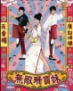
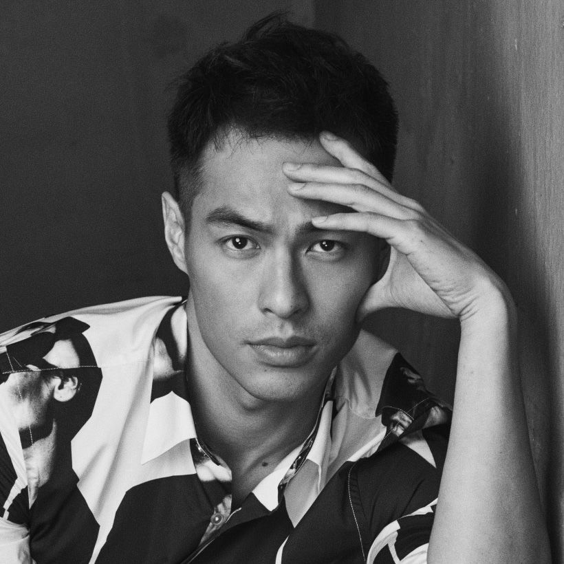
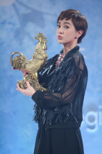
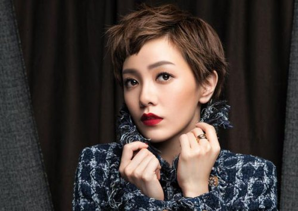

郭采洁
编辑 讨论 上传视频
1986年2月19日|台湾省台北市|中国
郭采洁（Amber Kuo），1986年2月19日出生于台湾省台北市，中国台湾影视女演员、流行乐歌手。
2007年，发行首张音乐专辑《隐形超人》而正式出道 [1] 。2008年，出演个人首部电视剧《无敌珊宝妹》获得关注，并获得台湾偶像剧年度最佳新人奖。2009年主演偶像剧《那一年的幸福时光》，凭该片提名第45届台湾电视金钟奖戏剧节目女主角奖 ；同年，发行第二张音乐专辑《爱异想》。2010年出演首部电影作品《一页台北》，并凭该片获得第12届台北电影节最佳新演员奖 [5]；同年，主演爱情片《近在咫尺的爱恋》。
2012年，郭采洁因在电影《小时代》中饰演顾里受到广泛关注，并凭该片提名第16届上海国际电影节电影频道传媒大奖最佳女主角 [8] ；同年，主演都市爱情片《意外的恋爱时光》 [9] 。2014年首次登上央视春晚，并演唱歌曲《答案》；同年，主演了爱情片《冲上云霄》 [10] 。2015年，发行第五张音乐专辑《爱造飞鸡》
代表作品
明星关系
-

前男友杨有宁
-
好友郭敬明
-
好友徐佳莹

社会活动
2010年5月16日，郭采洁受邀担任99年反毒大使，呼吁“全民总动员、无毒保家园” [61] ；10月，担任喜憨儿基金会公益大使 [62] ；同年，担任内政部全国孝行奖孝行大使。
 郭采洁活动照(6张)2012年1月7日，郭采洁与彭于晏前往非洲献爱心，并担任台湾世界展望会第23届“饥饿30”代言人 。
2013年5月27日，郭采洁担任卫教大使，为失智动画《阿嬷妮》失智症十大警讯宣导动画配音 [64] ；8月，出席了为“孩想要飞 用爱温饱”的弱势儿童开学扶助计划公益并担任爱心大使，鼓励更多人去关心和扶持弱势儿童 [65] ；9月，郭采洁出席第二届“幸福袋着走，让爱无阻碍”公益活动的首卖会并担任幸福大使，呼吁更多人去关注和帮助智障青年的生存情况
2017年9月9日，郭采洁参加了第15届芭莎明星慈善夜，并与众多艺人共同为“为爱加速”思源﹒芭莎自治区救护车项目募集善款
2018年4月25日，担任“中国宫颈癌预防控制科普项目”宣教大使的郭采洁为该公益项目演唱了公益歌曲《这样的我》
